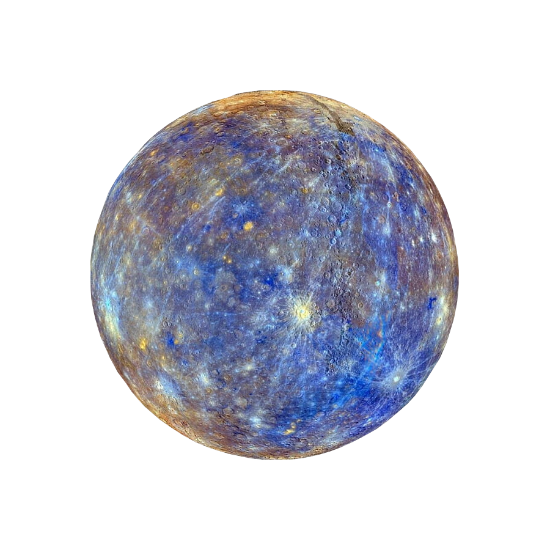

Merkury

-
Tylko 2 misje kosmiczne odwiedziły planetę. Ze względu na swoją
odległość od Słońca, Merkury nie jest łatwą do zbadania planetą. W
latach 1974-1975 wokół Merkurego przeleciała trzykrotnie sonda Mariner
10 i udało jej się sfotografować połowę powierzchni planety. Kolejną
misją była Messenger, która trwała w latach 2011-2015 i badała skład
chemiczny planety, jej geologię i pole magnetyczne.
-
Jądro Merkurego jest płynne. Choć planety tej wielkości raczej szybko
się wystudzają a ich jądra zmieniają się w ciała stałe, Merkury zdaje
się przeczyć tej teorii. Prawdopodobnie dzięki zawartości siarki w
jądrze jego temperatura topnienia jest niższa a jego część pozostaje w
stanie ciekłym. Jądro stanowi 85% średnicy planety.
- Rok na Merkurym trwa 88 dni ziemskich.
- Doba na Merkurym trwa 176 ziemskich dni.
- Merkury nie posiada ani księżyców ani pierścieni.
Powrót na stronę główną